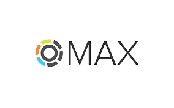
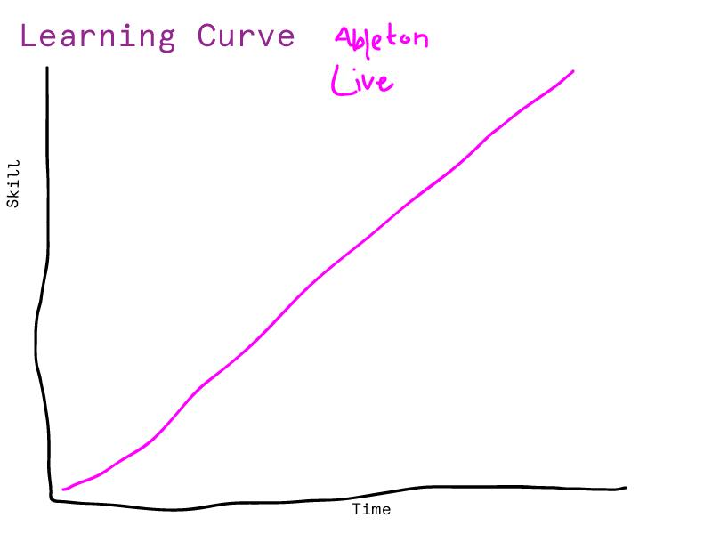
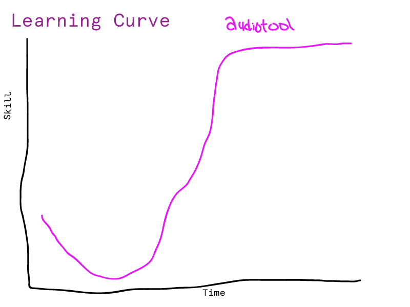
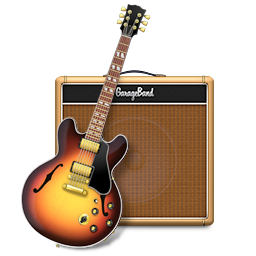
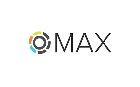
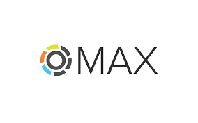

This is a Mac-based overview of some basic production tools, not really a demo of anything but just an introduction for those who want to make music and learn more about the ways to do that.
System Preferences > Sound
It's a good idea to be familiar with these preferences if you're not already, a lot of times when you can't hear something you will need to check here.
Applications > Utilities > Audio MIDI Setup
Another place to look when you can't hear anything.
Soundflower is like a (free) mixer for your computer, you can route audio from one program to another. Very useful for screen recordings, recording system audio, etc. Doesn't play nice with all programs (if you don't hear anything, either quit Soundflower and start again, or quit the program and start again, leaving Soundflower on, usually one will fix things).
SuperCollider is a programming language for real time audio synthesis and algorithmic composition.
High level language (open source and free to download) for synthesis, used for algorithmic composition, acoustic research, live coding and interactive programming.
These examples use Open Sound Control to communicate between Processing and Super Collider. OSC is super useful for communicating between applications, not just for sound. It is especially useful for Processing because Processing is not fun for doing sound.

Max/Msp/Jitter is a popular visual programming language for multimedia, used often for performance and installation.
Pure Data (pd) is an open source visual programming language written by Miller Puckette (who also wrote Max).
Ableton Live is a music sequencer and digital audio workstation. Live is usually used for live performance and the environment lends itself to combining samples with software synths controlled by MIDI, using beatmatching and mixing. It has also become popular as a recording and mixing/mastering tool.

Audiotool is a browser based music sequencer. It has web emulations of classics analog sequencers and synths like TR-808. Great for quickly making simple electronic tracks and saving work in the "cloud".


Garage Band, like the name implies, is free software (for Apple users) to record, create and mix audio, mainly for music or podcasts. It's sort of like the free version of more "professional" editing software like Logic Pro and Pro Tools. It does most of the same stuff, and even has the same soft synths you will find in Logic, but falls short mostly in the sophistication of mixing and mastering capabilities.


 
